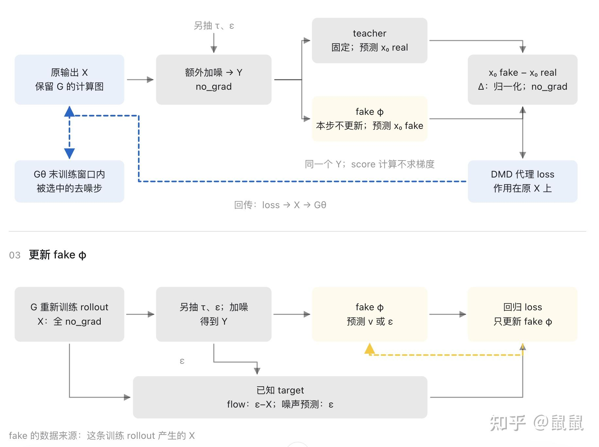

Score Centering 在 DMD 上的一些思考
什么是 Score Centering？
最近score centering在LLM很火，然后就想着这个玩意在vision上有没有用，就想着自己做了很久的DMD，如果是DMD会有用吗？
先回顾一下 score centering 在 RL（LLM 这边）里要解决的问题。它的出发点是缓解训推不一致带来的 off-policy 问题，也就是消除采样分布和训练分布不同导致的梯度 drift。举个例子：rollout 用的是 vLLM 里一个 4bit 量化的模型，而真正做 forward / backward 的是训练框架里的全精度模型，以类似 prefill 的方式重算概率。就算 vLLM 里没做量化，算子实现、采样策略的差异也会让两边的分布对不上。score centering 想处理的是这个 gap。
为了方便，下面把推理引擎实际采样的策略记为 $\mu$，训练引擎里的策略记为 $\pi_\theta$，$\pi_{\mathrm{old}}$ 是训练引擎在旧参数下重算出来的策略。常见的 PPO 目标长这样：
$$L^{\mathrm{CLIP}}(\theta)=\hat{\mathbb E}_t\left[\min\Big(r_t(\theta)\hat A_t,\;\operatorname{clip}\big(r_t(\theta),1-\epsilon,1+\epsilon\big)\hat A_t\Big)\right]$$其中 $\hat A_t$ 是优势，$r_t(\theta)=\dfrac{\pi_\theta(a_t|s_t)}{\pi_{\mathrm{old}}(a_t|s_t)}$ 是重要性比，分子是当前正在训练的策略，分母是旧策略。先忽略 clip，对 $r(\theta)\hat A$ 求导：
$$ \begin{aligned} \nabla_\theta\big[r(\theta)\hat A\big] &=\frac{\hat A}{\pi_{\mathrm{old}}(a|s)}\nabla_\theta\pi_\theta(a|s)\\ &=\frac{\pi_\theta(a|s)}{\pi_{\mathrm{old}}(a|s)}\hat A\,\frac{\nabla_\theta\pi_\theta(a|s)}{\pi_\theta(a|s)}\\ &=r(\theta)\hat A\,\nabla_\theta\log\pi_\theta(a|s) \end{aligned} $$所以忽略 clip 后，实际拿来更新参数的梯度是 $\mathbb E\big[r\hat A\,\nabla_\theta\log\pi_\theta\big]$。注意这里的期望是对实际采样到的动作取的，而动作来自 $\mu$。分母用的是 $\pi_{\mathrm{old}}$ 而不是 $\mu$，所以重要性比并没有把 $\mu$ 和 $\pi_{\mathrm{old}}$ 的差别修正掉。在每轮更新的第一步，$\theta=\theta_{\mathrm{old}}$，$r=1$，梯度就退化成 $\mathbb E_{a\sim\mu}\big[\hat A\,\nabla_\theta\log\pi_\theta(a|s)\big]$。
真正 on-policy 的时候，单独一个 score $\nabla_\theta\log\pi_\theta(a|s)$ 的期望是零：
$$\mathbb E_{a\sim\pi_\theta(\cdot|s)}\big[\nabla_\theta\log\pi_\theta(a|s)\big] =\sum_a\pi_\theta(a|s)\frac{\nabla_\theta\pi_\theta(a|s)}{\pi_\theta(a|s)} =\sum_a\nabla_\theta\pi_\theta(a|s) =\nabla_\theta\underbrace{\sum_a\pi_\theta(a|s)}_{=1} =0$$但样本实际来自 $\mu$，所以 $\mathbb E_{a\sim\mu(\cdot|s)}\big[\nabla_\theta\log\pi_\theta(a|s)\big]\neq 0$。把梯度按协方差拆开就能看清问题出在哪（$z=\nabla\log\pi(a|s)$，$\operatorname{Cov}_\mu[A,z]=\mathbb E_\mu[(A-\mathbb E_\mu A)(z-\mathbb E_\mu z)]$）：
$$\mathbb E_\mu\big[A(s,a)\,z\big] =\mathbb E_\mu[A(s,a)]\,\mathbb E_\mu[z]+\operatorname{Cov}_\mu\big[A(s,a),z\big]$$on-policy 时第一项因为 $\mathbb E_\pi[z]=0$ 自动消失，只剩协方差项，也就是“优势和 score 相关性”这部分有用的信号。现在 $\mathbb E_\mu[z]\neq 0$，第一项就成了一个和平均优势成正比的 drift。作者的做法很直接：把 score 中心化，
$$z_{\mathrm{new}}=z-\bar z,\qquad \bar z=\mathbb E_{a\sim\mu(\cdot|s)}\big[\nabla_\theta\log\pi_\theta(a|s)\big]$$这样 $\mathbb E_\mu[z_{\mathrm{new}}]=0$，而减掉一个常数向量不会改变协方差，于是：
$$ \begin{aligned} \mathbb E_\mu\big[A(s,a)\,z_{\mathrm{new}}\big] &=\mathbb E_\mu[A(s,a)]\,\underbrace{\mathbb E_\mu\big[z-\bar z\big]}_{=0}+\operatorname{Cov}_\mu\big[A(s,a),z_{\mathrm{new}}\big]\\ &=\operatorname{Cov}_\mu\big[A(s,a),z_{\mathrm{new}}\big]=\operatorname{Cov}_\mu\big[A(s,a),\nabla\log\pi(a|s)\big] \end{aligned} $$落到 loss 上非常简单（$A$ 和 $q$ 都不求梯度）：
$$\mathcal L=-A\Big(\log p_a-\underbrace{\sum_v q_v\log p_v}_{C}\Big)$$这里 $p$ 是训练引擎算出的词表分布（来自 $\pi_\theta$），$q$ 是采样引擎的词表分布（来自 $\mu$），$v$ 遍历整个词表。对 $C$ 求导：
$$\nabla_\theta C=\sum_v q_v\nabla_\theta\log p_v=\mathbb E_{a\sim\mu(\cdot|s)}\big[\nabla_\theta\log\pi_\theta(a|s)\big]=\bar z$$所以 $-\nabla_\theta\mathcal L=A\big(\nabla_\theta\log\pi_\theta(a|s)-\bar z\big)$，正好是中心化后的 score。LLM 能这么做有个前提：动作空间是有限词表，$\bar z$ 可以用一次加权求和精确算出来。但是后面到了 DMD，这个前提就没了，所以其实迁移起来并不容易。。。
DMD 场景下可能的训推不一致
标准的 Self-Forcing 和 DMD 大致是下面这个流程。两者的区别主要在于送进 DMD loss 的 $X$ 怎么来：Self-Forcing 是 rollout 加随机提前 exit；DMD 系列的做法比较多，比如 TDM，比如先加噪再去噪，比如 rollout 完再加噪去噪，等等。

对 score centering 来说，我目前想到的训推不一致只有一种形式。以传统的 4 NFE 训练为例：先不带梯度地 rollout $x_1\rightarrow x_{0.75}\rightarrow x_{0.5}\rightarrow x_{0.25}\rightarrow x_{0}$（flow-shift=1），然后对 $x_0$ 重新加噪、再用生成器带梯度地去噪一步，得到 $\hat x_0$。$\hat x_0$ 会再次加噪，送进 real score 和 fake score。这里 $\operatorname{Law}(x_0)$ 和 $\operatorname{Law}(\hat x_0)$ 并不相同：DMD 的输入来源是前者，而参数真正“负责”的分布是后者。下面就讨论这种情况。
把 Score Centering 引入 DMD（FlowGRPO会容易很多。。。）
[1] 记号和假设
先定义：
$$X\sim\mu,\qquad U_\tau=a_\tau X+b_\tau\eta,\qquad \hat X=G_\theta(U_\tau,\tau)\sim\pi_\theta,\qquad Y_t=\alpha_t\hat X+\sigma_t\epsilon$$$X$ 是 rollout 去噪得到的结果，分布记为 $\mu$。$\hat X$ 是把 $X$ 重新加噪后再用 $G_\theta$ 去噪一步的结果，分布记为 $\pi_\theta$。$\eta,\epsilon$ 是两次独立的高斯噪声。flow matching 下 $a_\tau=1-\tau$，$b_\tau=\tau$。
两个比较关键的事情：
- $\pi_\vartheta$ 这个密度族的来源始终固定为本次的 $\mu$，即 $\pi_\vartheta:=\operatorname{Law}\big(G_\vartheta(a_\tau X+b_\tau\eta,\tau)\big)$，$X\sim\mu$。变的只有参数 $\vartheta$。
- $\pi$ 依赖于 $\tau$。 下面所有期望、矩阵都是在给定 $\tau$ 的条件下定义的，代码里也是对每个样本选中的去噪步 $\tau$ 分别估计。为了少写下标，省略 $\tau$。
记 $\theta_0$ 为当前参数，$\pi_0:=\pi_{\theta_0}$，参数 score 定义为
$$z_\pi(x)=\nabla_\vartheta\log\pi_\vartheta(x)\big|_{\vartheta=\theta_0}\in\mathbb R^P$$注意这是生成分布密度对参数的梯度，不是扩散模型里常说的 $\nabla_x\log p$。DMD 括号里的那一坨记为
$$h(X,\eta,\epsilon)=w_t\alpha_t\,J_G(U_\tau)^\top\big\{s_{\mathrm{fake}}(Y_t,t)-s_{\mathrm{real}}(Y_t,t)\big\},\qquad J_G(U_\tau)=\frac{\partial G_\theta(U_\tau,\tau)}{\partial\theta}\Big|_{\theta_0}$$实际跑的 DMD 更新（输入来自 $\mu$）：
$$g_{\mathrm{DMD}}=\mathbb E_{X\sim\mu,\eta,\epsilon}\big[h(X,\eta,\epsilon)\big]$$我们希望参照的更新是同一张 DMD 训练图，只是把输入来源换成当前训练输出的分布 $\pi_0$：
$$g_{\mathrm{ref}}=\mathbb E_{X\sim\pi_0,\eta,\epsilon}\big[h(X,\eta,\epsilon)\big]$$因此，我们想知道：两者期望差多少，怎么消掉这个 drift？
接下来需要两个 $P\times P$ 矩阵（$P$ 是参数量）。$I$ 是参数 score 的二阶矩，也就是 Fisher 信息矩阵；$B$ 是 DMD 更新向量和参数 score 的交叉矩：
$$I=\mathbb E_{X\sim\pi_0}\big[z_\pi(X)z_\pi(X)^\top\big],\qquad B=\mathbb E_{X\sim\pi_0,\eta,\epsilon}\big[h(X,\eta,\epsilon)\,z_\pi(X)^\top\big]$$为了让推导成立，需要几个下面的假设：
- (A1) 可实现性：存在一个小的非零扰动 $\beta$，使 $\mu=\pi_{\theta_0+\beta}$。直观含义是，邻近参数下的“加噪+一步去噪”能把 $\mu$ 映回 $\mu$。这是个不弱的假设，后面的结论都建立在它之上。
- (A2) 二阶 Taylor：密度比关于参数在 $L^2(\pi_0)$ 中有二阶展开，二阶导数范数在邻域内不超过 $M$：
- (A3) $I$ 可逆，并且 $K:=\Big(\mathbb E_{X\sim\pi_0,\eta,\epsilon}\big\|h(X,\eta,\epsilon)-BI^{-1}z_\pi(X)\big\|^2\Big)^{1/2}<\infty$。
其中（A2）里的一阶项来自 $\partial_\vartheta\pi_\vartheta/\pi_0=z_\pi$，$R_\beta(X)$ 是 Taylor 余项。
[2] drift 是多少
$\eta,\epsilon$ 和 $X$ 独立，所以换测度只作用在 $X$ 上：
$$g_{\mathrm{DMD}}-g_{\mathrm{ref}}=\mathbb E_{X\sim\pi_0,\eta,\epsilon}\Big[\Big\{\frac{d\mu}{d\pi_0}(X)-1\Big\}\,h(X,\eta,\epsilon)\Big]$$代入（A2）的展开，$\mathbb E\big[(\beta^\top z_\pi)h\big]=\mathbb E\big[h z_\pi^\top\big]\beta=B\beta$，于是
$$g_{\mathrm{DMD}}-g_{\mathrm{ref}}=B\beta+\mathbb E_{X\sim\pi_0,\eta,\epsilon}\big[R_\beta(X)\,h(X,\eta,\epsilon)\big]$$一阶 drift 就是 $B\beta$。问题在于 $\beta$ 不知道，所以要用一个能估计的量把它表示出来。利用 $\mathbb E_{\pi_0}[z_\pi]=\int\partial_\vartheta\pi_\vartheta(x)\big|_{\theta_0}dx=\partial_\vartheta\!\int\pi_\vartheta(x)dx=0$，在 $\mu$ 下求参数 score 的均值（第一个等号还是用 Taylor 展开换测度）：
$$\mathbb E_\mu[z_\pi(X)]=\mathbb E_{\pi_0}\big[(1+\beta^\top z_\pi(X)+R_\beta(X))\,z_\pi(X)\big]=I\beta+\mathbb E_{\pi_0}\big[R_\beta(X)z_\pi(X)\big]$$也就是说，$\mathbb E_\mu[z_\pi]$ 在一阶上就是 $I\beta$。这一项正是 RL 里那个 $\bar z$ 的对应物：$\mu$ 下参数 score 的均值不为零。
[3]修正后的梯度
定义修正梯度
$$g_{\mathrm{corr}}=g_{\mathrm{DMD}}-BI^{-1}\mathbb E_\mu[z_\pi]$$把上面的 $\mathbb E_\mu[z_\pi]$ 代进去：
$$g_{\mathrm{corr}}=g_{\mathrm{DMD}}-BI^{-1}\big(I\beta+\mathbb E_{\pi_0}[R_\beta z_\pi]\big)=g_{\mathrm{DMD}}-B\beta-BI^{-1}\mathbb E_{\pi_0}[R_\beta z_\pi]$$即 $g_{\mathrm{corr}}-g_{\mathrm{DMD}}=-B\beta-BI^{-1}\mathbb E_{\pi_0}[R_\beta z_\pi]$。再和前面的 $g_{\mathrm{DMD}}-g_{\mathrm{ref}}$ 相加，$B\beta$ 正好抵消：
$$g_{\mathrm{corr}}-g_{\mathrm{ref}}=\mathbb E_{X\sim\pi_0,\eta,\epsilon}\Big[R_\beta(X)\big\{h(X,\eta,\epsilon)-BI^{-1}z_\pi(X)\big\}\Big]$$剩下的就是一个分析，因为误差只和 Taylor 余项有关，所以是二阶的。证明用三角不等式（向量积分的范数不超过范数的积分）、Cauchy–Schwarz 和余项界。先是三角不等式：
$$\|g_{\mathrm{corr}}-g_{\mathrm{ref}}\|\le\mathbb E\Big[|R_\beta(X)|\,\big\|h(X,\eta,\epsilon)-BI^{-1}z_\pi(X)\big\|\Big]$$右边是两个标量的乘积，用 Cauchy–Schwarz：
$$\|g_{\mathrm{corr}}-g_{\mathrm{ref}}\|\le\Big(\mathbb E|R_\beta(X)|^2\Big)^{1/2}\cdot\Big(\mathbb E\big\|h(X,\eta,\epsilon)-BI^{-1}z_\pi(X)\big\|^2\Big)^{1/2}$$$R_\beta(X)$ 只依赖 $X$，对两次噪声积分不改变它的二阶矩：
$$\mathbb E_{X\sim\pi_0,\eta,\epsilon}\big[|R_\beta(X)|^2\big]=\mathbb E_{X\sim\pi_0}\Big[|R_\beta(X)|^2\underbrace{\mathbb E_{\eta,\epsilon}[1]}_{=1}\Big]=\mathbb E_{X\sim\pi_0}\big[|R_\beta(X)|^2\big]$$所以第一个平方根就是余项的 $L^2(\pi_0)$ 范数，不超过 $\frac M2\|\beta\|^2$；第二个平方根就是（A3）里的 $K$。合起来：
$$\|g_{\mathrm{corr}}-g_{\mathrm{ref}}\|\le\frac{MK}{2}\|\beta\|^2=O(\|\beta\|^2)$$顺便对比一下 RL 的情况。LLM 那边的梯度是 score-function 形式 $A\,z$，可以直接把 $z$ 中心化。DMD 的梯度是 pathwise 形式，走的是 $J_G^\top(\cdot)$，里面根本没有显式的 $z$，没法直接“减均值”。所以要多一个交叉矩 $B$，把“密度层面的偏移 $\mathbb E_\mu[z_\pi]$”转换成“梯度层面的偏移”。$BI^{-1}z_\pi$ 其实就是 $h$ 在 $z_\pi$ 上的线性回归。
[4] 最终损失
把修正写成一个可以直接 backward 的代理损失：
$$ \begin{aligned} \mathcal L_{\mathrm{corr}}(\theta;\theta_0) ={}&\mathbb E_{X\sim\mu,\eta,\epsilon}\Big[\big\langle\operatorname{sg}\big[w_t\alpha_t\{s_{\mathrm{fake}}(Y_t,t)-s_{\mathrm{real}}(Y_t,t)\}\big],\,G_\theta(U_\tau,\tau)\big\rangle\Big]\\ &-\mathbb E_{X\sim\pi_0,\eta,\epsilon}\Big[\operatorname{sg}\big[z_\pi(X)^\top I^{-1}\mathbb E_\mu[z_\pi]\big]\cdot\big\langle\operatorname{sg}\big[w_t\alpha_t\{s_{\mathrm{fake}}(Y_t,t)-s_{\mathrm{real}}(Y_t,t)\}\big],\,G_\theta(U_\tau,\tau)\big\rangle\Big] \end{aligned} $$第一项就是原 DMD。第二项是新增的修正：输入换成来自 $\pi_0$ 的样本，同一张 DMD 图前面乘一个标量权重 $q(X)=z_\pi(X)^\top I^{-1}\mathbb E_\mu[z_\pi]$。验证一下梯度，$\langle\operatorname{sg}[c],G_\theta\rangle$ 对 $\theta$ 的梯度是 $J_G^\top c$，$q(X)$ 是标量，所以
$$ \begin{aligned} \nabla_\theta\mathcal L_{\mathrm{corr}}\big|_{\theta_0} &=g_{\mathrm{DMD}}-\mathbb E_{X\sim\pi_0,\eta,\epsilon}\big[h(X,\eta,\epsilon)\,z_\pi(X)^\top\big]I^{-1}\mathbb E_\mu[z_\pi]\\ &=g_{\mathrm{DMD}}-BI^{-1}\mathbb E_\mu[z_\pi]=g_{\mathrm{corr}} \end{aligned} $$和上一节定义的修正梯度完全一致。
[5] 代码实现
落到代码上，需要估计三样东西：$\mathbb E_\mu[z_\pi]$、$I$，以及每个参照样本上的 $z_\pi(X)$。最难的是 $z_\pi$ 本身。和 LLM 不同，这里的“动作”是连续高维的，$\pi_\theta$ 的密度没有闭式，只能近似。代码里给了两种做法：
sample（样本估计）：用 $K$ 个 $\pi_\theta$ 样本做高斯核密度估计，$\log\hat\pi_\theta(x)=\operatorname{logsumexp}_j\big(-\|G_\theta(U_j)-x\|^2/2h^2\big)+\text{const}$，再对参数求梯度。核中心保留计算图，查询点不求梯度；核中心和所有查询点用的是独立样本，避免查询点成为自己的核中心。带宽 $h>0$ 会把真实密度抹平，有限 $K$ 还会引入额外误差。inverse（可逆候选）：假设一步去噪映射 $u\mapsto u-\tau v_\theta(u)$ 是全局可微双射，用换元公式 $\log\pi_\theta(x)=\log p_U(u)-\log|\det J(u)|$，$u=G_\theta^{-1}(x)$。逆解用 Newton 迭代，逆解对参数的依赖用隐函数定理补回：$\partial u/\partial\theta=-J^{-1}\partial_\theta G$。$p_U$ 用冻结的 $\mu$ 样本构成的高斯混合近似；$\tau=1$ 时 $U$ 就是标准高斯，可以精确计算。这个模式需要完整的输入 Jacobian，只适合小模型做验证。
Fisher 这边，$P\times P$ 的矩阵在大型diffusion上根本存不下。所以用 $K$ 个 $\pi_0$ 校准样本的 score 堆成 $S\in\mathbb R^{K\times P}$，经验 Fisher $\hat I=S^\top S/K$，然后利用
$$z^\top\hat I^{+}m=K\,\big(G^{+}Sz\big)^\top\big(G^{+}Sm\big),\qquad G=SS^\top\in\mathbb R^{K\times K}$$只算 $K\times K$ 的 Gram 矩阵。代价是经验 Fisher 的秩至多为 $K$，等价于把修正投影到样本张成的子空间上，伪逆里的 rtol=1e-8 也只是数值截断，不是总体 Fisher 逆的精确计算。
伪代码如下：
import torch
import torch.nn as nn
import torch.nn.functional as F
import copy
class DMD(nn.Module):
def __init__(self, few_step_generator, fake_model, real_model,
scheduler, cfg=2, flow_shift=5, *, score_method="sample",
score_samples=4, score_bandwidth=0.1):
super().__init__()
self.few_step_generator = few_step_generator
self.fake_model = fake_model
self.real_model = real_model
self.num_denoising_step = 4
self.scheduler = scheduler
tmp_scheduler = copy.deepcopy(scheduler)
tmp_scheduler.set_timesteps(self.num_denoising_step)
self.denoising_step_list = tmp_scheduler.sigmas[:self.num_denoising_step + 1]
self.cfg = cfg
self.flow_shift = flow_shift
self.min_timesteps = 0.02
self.max_timesteps = 0.98
if score_method not in ("sample", "inverse"):
raise ValueError("score_method 只能是 sample 或 inverse。")
if not isinstance(score_samples, int) or score_samples < 2:
raise ValueError("score_samples 至少为 2，且必须是整数。")
if not 0 < float(score_bandwidth) < float("inf"):
raise ValueError("核带宽 score_bandwidth 必须是正的有限数。")
self.score_method = score_method
self.score_samples = score_samples
self.score_bandwidth = float(score_bandwidth)
def fake_score_loss(self, x, positive_condition):
x = x.detach()
noise = torch.randn_like(x)
bs = x.shape[0]
sigma = torch.rand(bs, device=x.device)
sigma = sigma * self.flow_shift / (1 + sigma * (self.flow_shift - 1))
x_t = noise * sigma.view(bs, 1, 1, 1, 1) + x * (1 - sigma).view(bs, 1, 1, 1, 1)
pred_x0 = x_t - sigma.view(bs, 1, 1, 1, 1) * self.fake_model(
x_t, sigma * 1000, positive_condition)
return F.mse_loss(pred_x0, x, reduction="mean")
def one_step_generation(self, x, positive_condition, idx=None):
x = x.detach()
bs = x.shape[0]
if idx is None:
idx = torch.randint(0, self.num_denoising_step, (bs,), device=x.device)
sigma = self.denoising_step_list.to(device=x.device, dtype=x.dtype)[idx]
noise = torch.randn_like(x)
x_t = noise * sigma.view(bs, 1, 1, 1, 1) + x * (1 - sigma).view(bs, 1, 1, 1, 1)
pred_x0 = x_t - sigma.view(bs, 1, 1, 1, 1) * self.few_step_generator(
x_t, sigma * 1000, positive_condition)
return pred_x0
def distribution_matching_loss(self, x, positive_condition, negative_condition):
bs = x.shape[0]
# 【提前检查】大输入的可逆候选在采样前拒绝，避免先执行昂贵的四步来源生成。
if self.score_method == "inverse" and x[0].numel() > 64:
raise ValueError("可逆候选需完整输入 Jacobian，目前仅允许最多 64 个坐标的小模型。")
# 【修改采样】每个Prompt：主组 + K 个 mu 校准 + K 个 pi 校准来源 + K 个密度来源。
# 密度来源与所有查询点独立，不能让查询点成为自己的核中心。
k = self.score_samples
groups = 1 + 3 * k
positive_all = torch.cat([positive_condition] * groups, dim=0)
with torch.no_grad():
x_all = torch.randn((groups * bs, *x.shape[1:]), device=x.device, dtype=x.dtype)
sigmas = self.denoising_step_list.to(device=x.device, dtype=x.dtype)
for i in range(self.num_denoising_step):
velocity = self.few_step_generator(
x_all, sigmas[i].expand(groups * bs) * 1000, positive_all)
x_all = x_all + (sigmas[i + 1] - sigmas[i]) * velocity
# 【保留】只共享提示和去噪步，来源噪声及重新加噪的噪声各自独立。
idx = torch.randint(0, self.num_denoising_step, (bs,), device=x.device)
x_hat = self.one_step_generation(x_all[:bs], positive_condition, idx)
with torch.no_grad():
x_mu_cal = x_all[bs:(1 + k) * bs].reshape(k, bs, *x.shape[1:])
x_pi_cal = self.one_step_generation(
x_all[(1 + k) * bs:(1 + 2 * k) * bs],
positive_all[(1 + k) * bs:(1 + 2 * k) * bs], idx.repeat(k)
).reshape(k, bs, *x.shape[1:])
x_density = x_all[(1 + 2 * k) * bs:]
params = tuple(p for p in self.few_step_generator.parameters() if p.requires_grad)
if not params:
raise ValueError("generator 没有可求参数 score 的训练参数。")
# 【形式二：样本估计】只对核中心的生成前向保留参数梯度。
if self.score_method == "sample":
density_centers = self.one_step_generation(
x_density, positive_all[(1 + 2 * k) * bs:], idx.repeat(k)
).reshape(k, bs, *x.shape[1:])
q_values = []
for batch_index in range(bs):
# 【新增查询】同一参数 score 分别在 mu、pi 校准点和参考来源上评价。
queries = torch.cat([
x_mu_cal[:, batch_index], x_pi_cal[:, batch_index],
x_hat[batch_index:batch_index + 1].detach()
], dim=0).detach()
scores = []
for query in queries:
if self.score_method == "sample":
# 【近似一】高斯核混合近似任意形状的 pi，不假设整个 pi 是高斯。
# 正带宽会平滑真实密度；有限 K 还有密度和参数梯度估计误差。
logits = -((density_centers[:, batch_index] - query).double().square()
.flatten(1).sum(1)) / (2 * self.score_bandwidth ** 2)
# 【真实参数梯度】省略与参数无关的归一化常数，不影响参数 score。
log_density = torch.logsumexp(logits, dim=0)
parts = torch.autograd.grad(log_density, params, retain_graph=True,
create_graph=False, allow_unused=True)
else:
# 【形式一：可逆候选】逆解实际去噪映射 u - sigma * velocity。
# 选择此模式意味着额外假设该映射为全局可微双射；局部收敛不证明它。
tau = sigmas[idx[batch_index]]
if tau <= 0:
raise ValueError("可逆候选的重新加噪强度必须大于零。")
u = query.unsqueeze(0).clone().requires_grad_(True)
condition = positive_condition[batch_index:batch_index + 1]
for _ in range(30):
pred = u - tau * self.few_step_generator(u, tau.reshape(1) * 1000, condition)
residual = (pred - query.unsqueeze(0)).flatten()
if residual.detach().double().norm() <= 1e-6 * (1 + query.double().norm()):
break
jacobian = torch.stack([
torch.autograd.grad(value, u, retain_graph=True)[0].flatten()
for value in pred.flatten()
])
step = torch.linalg.solve(jacobian.detach().double(), residual.detach().double())
u = (u.detach() - step.to(u.dtype).reshape_as(u)).requires_grad_(True)
# 【近似二】有限精度逆解；失败就报错，不将一个错误逆解代入密度。
pred = u - tau * self.few_step_generator(u, tau.reshape(1) * 1000, condition)
if (not torch.isfinite(pred).all() or
(pred - query.unsqueeze(0)).detach().double().norm() >
1e-6 * (1 + query.double().norm())):
raise ValueError("可逆候选未收敛；不能用当前逆解计算参数 score。")
jacobian = torch.stack([
torch.autograd.grad(value, u, retain_graph=True, create_graph=True)[0].flatten()
for value in pred.flatten()
]).double()
singular_values = torch.linalg.svdvals(jacobian.detach())
if (not torch.isfinite(singular_values).all() or
singular_values[-1] <= 1e-8 * singular_values[0]):
raise ValueError("可逆候选的输入 Jacobian 奇异或数值病态。")
sign, logdet = torch.linalg.slogdet(jacobian)
if sign == 0 or not torch.isfinite(logdet):
raise ValueError("可逆候选没有有效的体积变化项。")
input_centers = x_density.reshape(k, bs, *x.shape[1:])[:, batch_index].double()
# 【近似三】由冻结的 mu 样本近似真实加噪输入的混合密度。
# tau=1 时输入本身是标准高斯，这一项可以精确计算。
with torch.no_grad():
if tau == 1:
input_score = -u.detach().double().flatten()
else:
difference = (1 - tau) * input_centers - u.detach().double()
weights = torch.softmax(-difference.square().flatten(1).sum(1) / (2 * tau ** 2), dim=0)
input_score = (weights[:, None] * difference.flatten(1) / tau ** 2).sum(0)
logdet_u = None
if logdet.requires_grad:
logdet_u = torch.autograd.grad(logdet, u, retain_graph=True, allow_unused=True)[0]
if logdet_u is None:
logdet_u = torch.zeros_like(u)
# 【隐式求导】逆解本身不反传；下面显式补回逆解随参数变化的贡献。
coefficient = torch.linalg.solve(
jacobian.detach().T, input_score - logdet_u.detach().double().flatten()).detach()
log_density_derivative = -(pred.flatten().double() * coefficient).sum() - logdet
parts = torch.autograd.grad(log_density_derivative, params,
create_graph=False, allow_unused=True)
score = torch.cat([
part.detach().double().flatten() if part is not None
else torch.zeros_like(parameter, dtype=torch.float64).flatten()
for parameter, part in zip(params, parts)
])
if not torch.isfinite(score).all():
raise ValueError("参数 score 非有限；请检查带宽、逆解或模型数值。")
scores.append(score)
# 【共同近似】经验 Fisher 只有有限秩；这是样本张成方向的伪逆投影。
# S 的形状为 K*P，用 K*K Gram 矩阵避免构造 P*P Fisher，仍占用 K*P 内存。
# 1e-8 是数值谱截断，并非原总体 Fisher 逆的精确计算。
scores = torch.stack(scores)
m = scores[:k].mean(0)
s = scores[k:2 * k]
gram = s @ s.T
if not torch.isfinite(gram).all():
raise ValueError("经验 Fisher 的 Gram 矩阵非有限；请检查带宽或参数 score。")
gram_inverse = torch.linalg.pinv(gram, rtol=1e-8, hermitian=True)
if not torch.isfinite(gram_inverse).all():
raise ValueError("经验 Fisher 的伪逆非有限；不能构造修正权重。")
left = gram_inverse @ (s @ scores[-1])
right = gram_inverse @ (s @ m)
q_values.append(k * torch.dot(left, right))
q = torch.stack(q_values).detach()
if not torch.isfinite(q).all():
raise ValueError("修正权重 q 非有限；请检查密度估计或经验 Fisher。")
x_hat_ref = self.one_step_generation(x_hat.detach(), positive_condition, idx)
x_hat = torch.cat([x_hat, x_hat_ref], dim=0)
positive_condition = torch.cat([positive_condition] * 2, dim=0)
negative_condition = torch.cat([negative_condition] * 2, dim=0)
bs = x_hat.shape[0]
noise = torch.randn_like(x_hat)
sigma = torch.rand(bs, device=x_hat.device)
sigma = sigma * self.flow_shift / (1 + sigma * (self.flow_shift - 1))
sigma = sigma.clip(self.min_timesteps, self.max_timesteps)
x_t = noise * sigma.view(bs, 1, 1, 1, 1) + x_hat * (1 - sigma).view(bs, 1, 1, 1, 1)
with torch.no_grad():
x_r_p = x_t - sigma.view(bs, 1, 1, 1, 1) * self.real_model(x_t, sigma * 1000, positive_condition)
x_r_n = x_t - sigma.view(bs, 1, 1, 1, 1) * self.real_model(x_t, sigma * 1000, negative_condition)
x_f_p = x_t - sigma.view(bs, 1, 1, 1, 1) * self.fake_model(x_t, sigma * 1000, positive_condition)
x_r = x_r_p + self.cfg * (x_r_p - x_r_n) # 【保留】原引导系数与方向。
grad = x_f_p - x_r
grad /= (x_hat - x_r).abs().mean(dim=[1, 2, 3, 4], keepdim=True).clamp_min(1e-6)
grad = torch.nan_to_num(grad)
# 【更新】减去 q.detach() * loss_ref
loss = F.mse_loss(
x_hat.double(), (x_hat - grad).detach().double(), reduction="none"
).flatten(1).mean(1)
loss_mu, loss_ref = loss.chunk(2)
return (loss_mu - q.detach() * loss_ref).mean()[6] 和原始 DMD 的区别以及对于Flow-GRPO怎么改？
把上面代码里的 $q$ 恒置为 0，它就退化回原始 DMD：rollout 一组、随机选一个去噪步重新加噪去噪得到 x_hat，然后对 x_hat 算 DMD loss。具体改动如下：
| 原始 DMD | 加 Score Centering 之后 | |
|---|---|---|
| rollout | 每个 prompt 1 组 | 每个 prompt 1+3K 组：主组、K 个 \mu 校准、K 个 \pi 校准来源、K 个密度来源 |
| 参数 score | 不需要 | 对 2K+1 个查询点分别估计 z_\pi：K 个 \mu 点用于 \mathbb E_\mu[z_\pi]，K 个 \pi_0 点用于 Fisher，1 个是参照分支的输入 |
| 参照分支 | 无 | x_hat_ref = G(renoise(x_hat.detach()))，也就是把 \pi_0 的样本当作输入，再走一遍同样的一步去噪 |
| loss | loss_mu.mean() | (loss_mu - q.detach() * loss_ref).mean()，两个分支共用同一个去噪步，DMD 的加噪t和噪声各自独立 |
开销代价：
- 算力：多出 $3K$ 组无梯度 rollout、$2K$ 次一步去噪、一次参照分支的前反向；
sample模式下每个 prompt 还有 $2K+1$ 次对全部参数的 backward。 - 显存：每个 prompt 要存 $(2K+1)\times P$ 个 float64 的 score。对大模型来说，这一步基本需要换成随机投影、只取部分层的参数之类的近似才跑得动。
所以这玩意可能完全没什么用处，但放到diffusion上的PPO，GRPO，DiffusioNFT会好很多，因为FlowGRPO 可以直接处理选中轨迹点的条件转移，不需要处理最终图像的边缘分布，比如Flow-GRPO，这个 $\bar z$ 非常容易得到：
$$ \boxed{ \bar z_\mu = \mathbb E_\mu[z_\pi] = \frac{1}{Dv} \left(\frac{\partial m_\theta}{\partial\theta}\right)^T(m_\mu-m_\theta). } $$这里的 $m_\theta$ 是已经rollout完轨迹然后再次采样的结果，然后 $m_\mu$ 就是原来保存的轨迹的下一点点条件期望，可以通过很简单的修改loss来实现：
$$ C_\theta = -\frac{\|m_\theta-\operatorname{sg}(m_\mu)\|^2}{2Dv}, \qquad \nabla_\theta C_\theta=\bar z_\mu,\qquad \boxed{ L_{\mathrm{SC}} = -\mathbb E_\mu \left[ \operatorname{sg}(A) \left(\log\pi_\theta(a\mid s)-C_\theta\right) \right]. } $$改的地方也就：
# rollout_mean：rollout 时保存的 prev_sample_mean，固定不反传。
# prev_sample_mean：训练时重新计算的均值，保留 generator 梯度。
# step_variance：该步实际随机噪声方差。
correction = -0.5 * (
(prev_sample_mean - rollout_mean.detach()).square()
/ step_variance.detach()
).flatten(1).mean(1)
# log_prob：当前策略对保存的下一步 latent 计算的 log probability。
# advantages：沿用原 GRPO 的组内优势。
loss = -(
advantages.detach() * (log_prob - correction)
).mean()这一部分其实改起来代价就很小了。。。如果DMD非要这样做，那么其实核心可能是要跳出目前的逻辑，将图片的边缘分布和下一点转移联系起来才行。比如DMD 完全可以用真实 rollout 的中间点来优化，就是不知道会发生什么了。。。
Thoughts on Applying Score Centering to Distribution Matching Distillation (DMD)
What Is Score Centering?
Score centering has been trending in LLM RL recently, which got me wondering whether it could also be useful in vision---specifically for Distribution Matching Distillation (DMD), which I have been working on for a long time.
Let us first recap the problem score centering solves in LLM RL. Its goal is to mitigate the off-policy gap caused by train-inference mismatch, i.e., eliminating gradient drift when the sampling distribution differs from the training distribution. For example, rollout may run a 4-bit quantized model in vLLM, while forward/backward passes run a full-precision model in the training engine that recomputes log-probabilities like a prefill pass. Even without quantization, kernel and sampling differences cause the two distributions to diverge. Score centering targets this gap.
Denote the inference engine's sampling policy by $\mu$, the training engine's current policy by $\pi_\theta$, and the training engine's recomputed old policy by $\pi_{\mathrm{old}}$. The standard PPO objective is:
$$L^{\mathrm{CLIP}}(\theta)=\hat{\mathbb E}_t\left[\min\Big(r_t(\theta)\hat A_t,\;\operatorname{clip}\big(r_t(\theta),1-\epsilon,1+\epsilon\big)\hat A_t\Big)\right]$$where $\hat A_t$ is the advantage and $r_t(\theta)=\dfrac{\pi_\theta(a_t|s_t)}{\pi_{\mathrm{old}}(a_t|s_t)}$ is the importance ratio. Ignoring clipping and differentiating $r(\theta)\hat A$:
$$ \begin{aligned} \nabla_\theta\big[r(\theta)\hat A\big] &= \frac{\hat A}{\pi_{\mathrm{old}}(a|s)}\nabla_\theta\pi_\theta(a|s) \\ &= \frac{\pi_\theta(a|s)}{\pi_{\mathrm{old}}(a|s)}\hat A\,\frac{\nabla_\theta\pi_\theta(a|s)}{\pi_\theta(a|s)} \\ &= r(\theta)\hat A\,\nabla_\theta\log\pi_\theta(a|s) \end{aligned} $$Thus the actual parameter update gradient is $\mathbb E\big[r\hat A\,\nabla_\theta\log\pi_\theta\big]$, where the expectation is taken over actually sampled actions drawn from $\mu$. Because the denominator uses $\pi_{\mathrm{old}}$ rather than $\mu$, the importance ratio does not correct the mismatch between $\mu$ and $\pi_{\mathrm{old}}$. At the first update step ($\theta=\theta_{\mathrm{old}}$, $r=1$), the gradient reduces to $\mathbb E_{a\sim\mu}\big[\hat A\,\nabla_\theta\log\pi_\theta(a|s)\big]$.
When truly on-policy, the expected score $\nabla_\theta\log\pi_\theta(a|s)$ is zero:
$$\mathbb E_{a\sim\pi_\theta(\cdot|s)}\big[\nabla_\theta\log\pi_\theta(a|s)\big] = \sum_a\pi_\theta(a|s)\frac{\nabla_\theta\pi_\theta(a|s)}{\pi_\theta(a|s)} = \nabla_\theta\underbrace{\sum_a\pi_\theta(a|s)}_{=1} = 0$$With samples coming from $\mu$, $\mathbb E_{a\sim\mu(\cdot|s)}\big[\nabla_\theta\log\pi_\theta(a|s)\big]\neq 0$. Decomposing by covariance (with $z=\nabla\log\pi(a|s)$):
$$\mathbb E_\mu\big[A(s,a)\,z\big] = \mathbb E_\mu[A(s,a)]\,\mathbb E_\mu[z] + \operatorname{Cov}_\mu\big[A(s,a),z\big]$$Under on-policy sampling the first term vanishes, leaving only the useful covariance signal. When $\mathbb E_\mu[z]\neq 0$, the first term becomes a drift proportional to the mean advantage. Centering the score directly:
$$z_{\mathrm{new}} = z - \bar z,\qquad \bar z = \mathbb E_{a\sim\mu(\cdot|s)}\big[\nabla_\theta\log\pi_\theta(a|s)\big]$$restores $\mathbb E_\mu[z_{\mathrm{new}}]=0$ without altering the covariance:
$$\mathbb E_\mu\big[A(s,a)\,z_{\mathrm{new}}\big] = \operatorname{Cov}_\mu\big[A(s,a),\nabla\log\pi(a|s)\big]$$At the loss level (with stop-gradient on $A$ and $q$), this is simply:
$$\mathcal L = -A\Big(\log p_a - \underbrace{\sum_v q_v\log p_v}_{C}\Big), \qquad \nabla_\theta C = \sum_v q_v\nabla_\theta\log p_v = \bar z$$where $p$ is the training vocabulary distribution ($\pi_\theta$) and $q$ is the sampling distribution ($\mu$). This works cleanly in LLMs because the action space is a finite vocabulary, so $\bar z$ can be computed exactly by a weighted sum. In DMD, that premise no longer holds, making the transfer non-trivial.
Potential Train-Inference Mismatch in DMD
Standard Self-Forcing and DMD follow the pipeline below; their main difference is how the input $X$ fed into the DMD loss is produced (Self-Forcing uses rollout with random early exit; DMD variants include TDM, re-noising then denoising, or rollout followed by re-noising and one-step denoising).
For score centering, the main form of mismatch arises in classic 4-NFE training: first run a no-grad rollout $x_1\to x_{0.75}\to x_{0.5}\to x_{0.25}\to x_0$ (flow-shift=1), then re-noise $x_0$ and take a gradient-enabled one-step denoising pass with the generator to obtain $\hat x_0$, which is re-noised again for the real and fake scores. Here $\operatorname{Law}(x_0) \neq \operatorname{Law}(\hat x_0)$: DMD takes inputs from the former, whereas the parameters actually govern the latter.
Introducing Score Centering into DMD (Flow-GRPO Is Much Easier)
[1] Notation and Assumptions
Define:
$$X\sim\mu,\qquad U_\tau=a_\tau X+b_\tau\eta,\qquad \hat X=G_\theta(U_\tau,\tau)\sim\pi_\theta,\qquad Y_t=\alpha_t\hat X+\sigma_t\epsilon$$where $X\sim\mu$ is the rollout sample, $\hat X\sim\pi_\theta$ is the re-noised one-step denoised output, and $\eta,\epsilon$ are independent Gaussian noises ($a_\tau=1-\tau, b_\tau=\tau$ under flow matching). Note that the density family $\pi_\vartheta := \operatorname{Law}(G_\vartheta(a_\tau X+b_\tau\eta,\tau))$ fixes the input source $\mu$ and varies only $\vartheta$, conditioned on the selected denoising step $\tau$.
Let $\theta_0$ be current parameters and $\pi_0:=\pi_{\theta_0}$. Define the parameter score (gradient of the generated density w.r.t.\ parameters, not the data score $\nabla_x\log p$):
$$z_\pi(x) = \nabla_\vartheta\log\pi_\vartheta(x)\big|_{\vartheta=\theta_0}\in\mathbb R^P$$Denote the per-sample DMD update vector by:
$$h(X,\eta,\epsilon) = w_t\alpha_t\,J_G(U_\tau)^\top\big\{s_{\mathrm{fake}}(Y_t,t)-s_{\mathrm{real}}(Y_t,t)\big\}, \qquad J_G(U_\tau) = \frac{\partial G_\theta(U_\tau,\tau)}{\partial\theta}\Big|_{\theta_0}$$The actual DMD gradient is $g_{\mathrm{DMD}} = \mathbb E_{X\sim\mu,\eta,\epsilon}[h]$, whereas the reference gradient drawn from the current output distribution $\pi_0$ is $g_{\mathrm{ref}} = \mathbb E_{X\sim\pi_0,\eta,\epsilon}[h]$. Define the $P\times P$ Fisher information matrix $I$ and cross-moment $B$:
$$I = \mathbb E_{X\sim\pi_0}\big[z_\pi(X)z_\pi(X)^\top\big], \qquad B = \mathbb E_{X\sim\pi_0,\eta,\epsilon}\big[h(X,\eta,\epsilon)\,z_\pi(X)^\top\big]$$Under three assumptions: (A1) Realizability: there exists a small perturbation $\beta$ with $\mu = \pi_{\theta_0+\beta}$; (A2) Second-order Taylor expansion in $L^2(\pi_0)$: $\frac{d\mu}{d\pi_0}(X) = 1 + \beta^\top z_\pi(X) + R_\beta(X)$ with $\|R_\beta\|_{L^2(\pi_0)} \le \frac{M}{2}\|\beta\|^2$; and (A3) $I$ is invertible with $K := (\mathbb E\|h - BI^{-1}z_\pi\|^2)^{1/2} < \infty$.
[2] Quantifying the Drift
Since $\eta,\epsilon$ are independent of $X$, changing measure acts only on $X$:
$$g_{\mathrm{DMD}} - g_{\mathrm{ref}} = B\beta + \mathbb E_{X\sim\pi_0,\eta,\epsilon}\big[R_\beta(X)\,h(X,\eta,\epsilon)\big]$$The first-order drift is $B\beta$. Because $\beta$ is unknown, we express it via the estimable quantity $\mathbb E_\mu[z_\pi(X)]$: using $\mathbb E_{\pi_0}[z_\pi]=0$,
$$\mathbb E_\mu[z_\pi(X)] = I\beta + \mathbb E_{\pi_0}\big[R_\beta(X)z_\pi(X)\big]$$Thus $\mathbb E_\mu[z_\pi] \approx I\beta$ to first order, directly mirroring $\bar z$ in LLM RL.
[3] Corrected Gradient
Define the corrected gradient:
$$g_{\mathrm{corr}} = g_{\mathrm{DMD}} - B I^{-1}\mathbb E_\mu[z_\pi]$$Substituting $\mathbb E_\mu[z_\pi]$ cancels the first-order drift $B\beta$ exactly:
$$g_{\mathrm{corr}} - g_{\mathrm{ref}} = \mathbb E_{X\sim\pi_0,\eta,\epsilon}\Big[R_\beta(X)\big\{h(X,\eta,\epsilon) - BI^{-1}z_\pi(X)\big\}\Big]$$By the triangle inequality and Cauchy--Schwarz, the remaining error is second-order:
$$\|g_{\mathrm{corr}} - g_{\mathrm{ref}}\| \le \frac{MK}{2}\|\beta\|^2 = O(\|\beta\|^2)$$Unlike LLM RL (where the score-function gradient $Az$ lets us center $z$ directly), DMD uses a pathwise gradient $J_G^\top(\cdot)$ without an explicit $z$, so the cross-moment $B$ is required to map density-space drift $\mathbb E_\mu[z_\pi]$ into gradient-space drift ($BI^{-1}z_\pi$ is the linear regression of $h$ onto $z_\pi$).
[4] Surrogate Loss
Writing the correction as a differentiable surrogate loss:
$$ \begin{aligned} \mathcal L_{\mathrm{corr}}(\theta;\theta_0) = {} &\mathbb E_{X\sim\mu,\eta,\epsilon}\Big[\big\langle\operatorname{sg}\big[w_t\alpha_t\{s_{\mathrm{fake}}(Y_t,t)-s_{\mathrm{real}}(Y_t,t)\}\big],\,G_\theta(U_\tau,\tau)\big\rangle\Big] \\ &- \mathbb E_{X\sim\pi_0,\eta,\epsilon}\Big[\operatorname{sg}\big[z_\pi(X)^\top I^{-1}\mathbb E_\mu[z_\pi]\big]\cdot\big\langle\operatorname{sg}\big[w_t\alpha_t\{s_{\mathrm{fake}}(Y_t,t)-s_{\mathrm{real}}(Y_t,t)\}\big],\,G_\theta(U_\tau,\tau)\big\rangle\Big] \end{aligned} $$The first term is standard DMD; the second evaluates the same DMD graph on reference samples from $\pi_0$ weighted by scalar $q(X) = z_\pi(X)^\top I^{-1}\mathbb E_\mu[z_\pi]$, whose gradient at $\theta_0$ equals $g_{\mathrm{corr}}$ exactly.
[5] Implementation Details
To implement this, we estimate $\mathbb E_\mu[z_\pi]$, $I$, and $z_\pi(X)$ on continuous high-dimensional outputs via two approximations:
sample(KDE): Approximate $\pi_\theta$ with $K$ independent generator samples via Gaussian KDE, $\log\hat\pi_\theta(x)=\operatorname{logsumexp}_j(-\|G_\theta(U_j)-x\|^2/2h^2)+\text{const}$, and differentiate w.r.t.\ $\theta$.inverse(invertible candidate): Assume one-step denoising $u\mapsto u-\tau v_\theta(u)$ is a diffeomorphism, solve $u=G_\theta^{-1}(x)$ via Newton iterations, and apply change-of-variables with implicit differentiation (small models only).
To avoid storing a $P\times P$ Fisher matrix, we stack $K$ calibration scores into $S\in\mathbb R^{K\times P}$ and compute the $K\times K$ Gram matrix $G = SS^\top$:
$$z^\top\hat I^{+}m = K\,\big(G^{+}Sz\big)^\top\big(G^{+}Sm\big)$$Pseudocode reference implementation:
import torch
import torch.nn as nn
import torch.nn.functional as F
import copy
class DMD(nn.Module):
def __init__(self, few_step_generator, fake_model, real_model,
scheduler, cfg=2, flow_shift=5, *, score_method="sample",
score_samples=4, score_bandwidth=0.1):
super().__init__()
self.few_step_generator = few_step_generator
self.fake_model = fake_model
self.real_model = real_model
self.num_denoising_step = 4
self.scheduler = scheduler
tmp_scheduler = copy.deepcopy(scheduler)
tmp_scheduler.set_timesteps(self.num_denoising_step)
self.denoising_step_list = tmp_scheduler.sigmas[:self.num_denoising_step + 1]
self.cfg = cfg
self.flow_shift = flow_shift
self.min_timesteps = 0.02
self.max_timesteps = 0.98
if score_method not in ("sample", "inverse"):
raise ValueError("score_method must be 'sample' or 'inverse'.")
if not isinstance(score_samples, int) or score_samples < 2:
raise ValueError("score_samples must be an integer >= 2.")
if not 0 < float(score_bandwidth) < float("inf"):
raise ValueError("score_bandwidth must be a positive finite number.")
self.score_method = score_method
self.score_samples = score_samples
self.score_bandwidth = float(score_bandwidth)
def fake_score_loss(self, x, positive_condition):
x = x.detach()
noise = torch.randn_like(x)
bs = x.shape[0]
sigma = torch.rand(bs, device=x.device)
sigma = sigma * self.flow_shift / (1 + sigma * (self.flow_shift - 1))
x_t = noise * sigma.view(bs, 1, 1, 1, 1) + x * (1 - sigma).view(bs, 1, 1, 1, 1)
pred_x0 = x_t - sigma.view(bs, 1, 1, 1, 1) * self.fake_model(
x_t, sigma * 1000, positive_condition)
return F.mse_loss(pred_x0, x, reduction="mean")
def one_step_generation(self, x, positive_condition, idx=None):
x = x.detach()
bs = x.shape[0]
if idx is None:
idx = torch.randint(0, self.num_denoising_step, (bs,), device=x.device)
sigma = self.denoising_step_list.to(device=x.device, dtype=x.dtype)[idx]
noise = torch.randn_like(x)
x_t = noise * sigma.view(bs, 1, 1, 1, 1) + x * (1 - sigma).view(bs, 1, 1, 1, 1)
pred_x0 = x_t - sigma.view(bs, 1, 1, 1, 1) * self.few_step_generator(
x_t, sigma * 1000, positive_condition)
return pred_x0
def distribution_matching_loss(self, x, positive_condition, negative_condition):
bs = x.shape[0]
if self.score_method == "inverse" and x[0].numel() > 64:
raise ValueError("inverse mode requires full input Jacobian (max 64 coords).")
# Per prompt: main group + K mu-cal + K pi-cal sources + K density sources
k = self.score_samples
groups = 1 + 3 * k
positive_all = torch.cat([positive_condition] * groups, dim=0)
with torch.no_grad():
x_all = torch.randn((groups * bs, *x.shape[1:]), device=x.device, dtype=x.dtype)
sigmas = self.denoising_step_list.to(device=x.device, dtype=x.dtype)
for i in range(self.num_denoising_step):
velocity = self.few_step_generator(
x_all, sigmas[i].expand(groups * bs) * 1000, positive_all)
x_all = x_all + (sigmas[i + 1] - sigmas[i]) * velocity
idx = torch.randint(0, self.num_denoising_step, (bs,), device=x.device)
x_hat = self.one_step_generation(x_all[:bs], positive_condition, idx)
with torch.no_grad():
x_mu_cal = x_all[bs:(1 + k) * bs].reshape(k, bs, *x.shape[1:])
x_pi_cal = self.one_step_generation(
x_all[(1 + k) * bs:(1 + 2 * k) * bs],
positive_all[(1 + k) * bs:(1 + 2 * k) * bs], idx.repeat(k)
).reshape(k, bs, *x.shape[1:])
x_density = x_all[(1 + 2 * k) * bs:]
params = tuple(p for p in self.few_step_generator.parameters() if p.requires_grad)
if not params:
raise ValueError("Generator has no trainable parameters for score estimation.")
if self.score_method == "sample":
density_centers = self.one_step_generation(
x_density, positive_all[(1 + 2 * k) * bs:], idx.repeat(k)
).reshape(k, bs, *x.shape[1:])
q_values = []
for batch_index in range(bs):
queries = torch.cat([
x_mu_cal[:, batch_index], x_pi_cal[:, batch_index],
x_hat[batch_index:batch_index + 1].detach()
], dim=0).detach()
scores = []
for query in queries:
if self.score_method == "sample":
logits = -((density_centers[:, batch_index] - query).double().square()
.flatten(1).sum(1)) / (2 * self.score_bandwidth ** 2)
log_density = torch.logsumexp(logits, dim=0)
parts = torch.autograd.grad(log_density, params, retain_graph=True,
create_graph=False, allow_unused=True)
else:
tau = sigmas[idx[batch_index]]
if tau <= 0:
raise ValueError("Re-noising sigma must be > 0 in inverse mode.")
u = query.unsqueeze(0).clone().requires_grad_(True)
condition = positive_condition[batch_index:batch_index + 1]
for _ in range(30):
pred = u - tau * self.few_step_generator(u, tau.reshape(1) * 1000, condition)
residual = (pred - query.unsqueeze(0)).flatten()
if residual.detach().double().norm() <= 1e-6 * (1 + query.double().norm()):
break
jacobian = torch.stack([
torch.autograd.grad(value, u, retain_graph=True)[0].flatten()
for value in pred.flatten()
])
step = torch.linalg.solve(jacobian.detach().double(), residual.detach().double())
u = (u.detach() - step.to(u.dtype).reshape_as(u)).requires_grad_(True)
pred = u - tau * self.few_step_generator(u, tau.reshape(1) * 1000, condition)
if (not torch.isfinite(pred).all() or
(pred - query.unsqueeze(0)).detach().double().norm() >
1e-6 * (1 + query.double().norm())):
raise ValueError("Newton inverse failed to converge.")
jacobian = torch.stack([
torch.autograd.grad(value, u, retain_graph=True, create_graph=True)[0].flatten()
for value in pred.flatten()
]).double()
singular_values = torch.linalg.svdvals(jacobian.detach())
if (not torch.isfinite(singular_values).all() or
singular_values[-1] <= 1e-8 * singular_values[0]):
raise ValueError("Input Jacobian is singular or ill-conditioned.")
sign, logdet = torch.linalg.slogdet(jacobian)
if sign == 0 or not torch.isfinite(logdet):
raise ValueError("Invalid log-determinant term.")
input_centers = x_density.reshape(k, bs, *x.shape[1:])[:, batch_index].double()
with torch.no_grad():
if tau == 1:
input_score = -u.detach().double().flatten()
else:
difference = (1 - tau) * input_centers - u.detach().double()
weights = torch.softmax(-difference.square().flatten(1).sum(1) / (2 * tau ** 2), dim=0)
input_score = (weights[:, None] * difference.flatten(1) / tau ** 2).sum(0)
logdet_u = None
if logdet.requires_grad:
logdet_u = torch.autograd.grad(logdet, u, retain_graph=True, allow_unused=True)[0]
if logdet_u is None:
logdet_u = torch.zeros_like(u)
coefficient = torch.linalg.solve(
jacobian.detach().T, input_score - logdet_u.detach().double().flatten()).detach()
log_density_derivative = -(pred.flatten().double() * coefficient).sum() - logdet
parts = torch.autograd.grad(log_density_derivative, params,
create_graph=False, allow_unused=True)
score = torch.cat([
part.detach().double().flatten() if part is not None
else torch.zeros_like(parameter, dtype=torch.float64).flatten()
for parameter, part in zip(params, parts)
])
if not torch.isfinite(score).all():
raise ValueError("Non-finite parameter score.")
scores.append(score)
# Empirical Fisher via K x K Gram matrix
scores = torch.stack(scores)
m = scores[:k].mean(0)
s = scores[k:2 * k]
gram = s @ s.T
if not torch.isfinite(gram).all():
raise ValueError("Non-finite empirical Fisher Gram matrix.")
gram_inverse = torch.linalg.pinv(gram, rtol=1e-8, hermitian=True)
if not torch.isfinite(gram_inverse).all():
raise ValueError("Non-finite Gram pseudo-inverse.")
left = gram_inverse @ (s @ scores[-1])
right = gram_inverse @ (s @ m)
q_values.append(k * torch.dot(left, right))
q = torch.stack(q_values).detach()
if not torch.isfinite(q).all():
raise ValueError("Non-finite correction weight q.")
x_hat_ref = self.one_step_generation(x_hat.detach(), positive_condition, idx)
x_hat = torch.cat([x_hat, x_hat_ref], dim=0)
positive_condition = torch.cat([positive_condition] * 2, dim=0)
negative_condition = torch.cat([negative_condition] * 2, dim=0)
bs = x_hat.shape[0]
noise = torch.randn_like(x_hat)
sigma = torch.rand(bs, device=x_hat.device)
sigma = sigma * self.flow_shift / (1 + sigma * (self.flow_shift - 1))
sigma = sigma.clip(self.min_timesteps, self.max_timesteps)
x_t = noise * sigma.view(bs, 1, 1, 1, 1) + x_hat * (1 - sigma).view(bs, 1, 1, 1, 1)
with torch.no_grad():
x_r_p = x_t - sigma.view(bs, 1, 1, 1, 1) * self.real_model(x_t, sigma * 1000, positive_condition)
x_r_n = x_t - sigma.view(bs, 1, 1, 1, 1) * self.real_model(x_t, sigma * 1000, negative_condition)
x_f_p = x_t - sigma.view(bs, 1, 1, 1, 1) * self.fake_model(x_t, sigma * 1000, positive_condition)
x_r = x_r_p + self.cfg * (x_r_p - x_r_n)
grad = x_f_p - x_r
grad /= (x_hat - x_r).abs().mean(dim=[1, 2, 3, 4], keepdim=True).clamp_min(1e-6)
grad = torch.nan_to_num(grad)
loss = F.mse_loss(
x_hat.double(), (x_hat - grad).detach().double(), reduction="none"
).flatten(1).mean(1)
loss_mu, loss_ref = loss.chunk(2)
return (loss_mu - q.detach() * loss_ref).mean()[6] Differences from Original DMD and How to Adapt to Flow-GRPO
Setting $q \equiv 0$ recovers vanilla DMD. The added cost is steep: $3K$ extra no-grad rollouts, $2K$ one-step denoises, one reference forward/backward, $2K+1$ full-parameter backward passes per prompt in sample mode, and $(2K+1)\times P$ float64 score memory.
Therefore, this may not be practical for large-scale DMD directly---but it becomes far simpler for diffusion PPO, GRPO, or DiffusionNFT, because Flow-GRPO operates on conditional transitions of selected trajectory steps rather than the marginal image distribution. For Flow-GRPO, $\bar z_\mu$ has a closed form:
$$\bar z_\mu = \mathbb E_\mu[z_\pi] = \frac{1}{Dv} \left(\frac{\partial m_\theta}{\partial\theta}\right)^\top (m_\mu - m_\theta)$$where $m_\theta$ is the recomputed next-step conditional mean during training and $m_\mu$ is the saved rollout mean. This translates into a tiny loss modification:
$$C_\theta = -\frac{\|m_\theta-\operatorname{sg}(m_\mu)\|^2}{2Dv}, \qquad \nabla_\theta C_\theta = \bar z_\mu, \qquad L_{\mathrm{SC}} = -\mathbb E_\mu\left[\operatorname{sg}(A)\left(\log\pi_\theta(a\mid s) - C_\theta\right)\right]$$# rollout_mean: saved prev_sample_mean from rollout (detached)
# prev_sample_mean: recomputed mean during training (with generator grad)
# step_variance: actual stochastic noise variance of the step
correction = -0.5 * (
(prev_sample_mean - rollout_mean.detach()).square()
/ step_variance.detach()
).flatten(1).mean(1)
loss = -(advantages.detach() * (log_prob - correction)).mean()This modification is almost free. For DMD itself, making score centering practical likely requires breaking out of the marginal-distribution formulation and tying image marginals directly to intermediate rollout transitions.